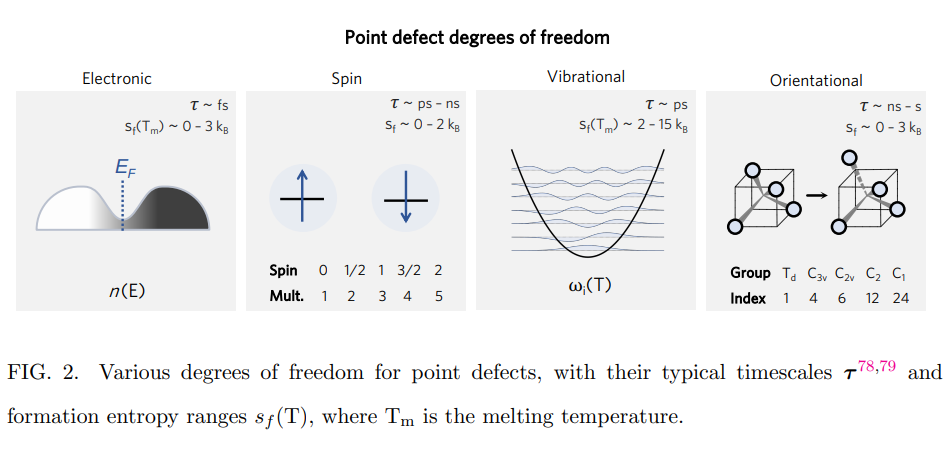
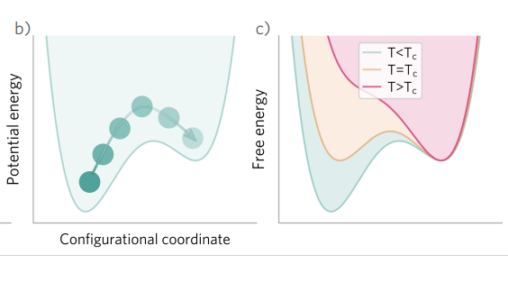
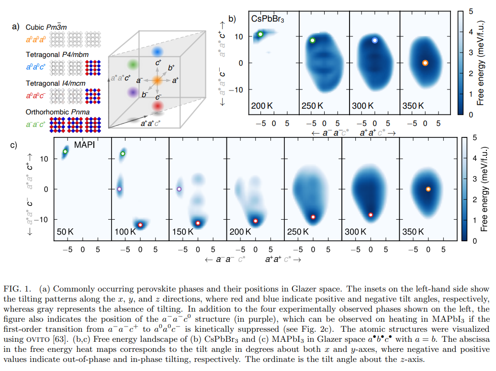
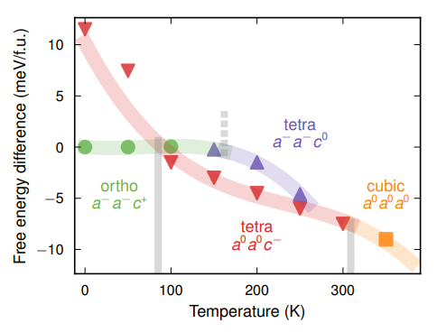

所感
個人的に気になる論文をピックアップして紹介していきます。9月末に更新します。
論文タイトル一覧
1. 不完全性は0Kではない：結晶中の点欠陥の自由エネルギー
・結晶中の点欠陥の形成に関する自由エネルギーの理論的記述を紹介する。点欠陥の形成自由エネルギーは、エンタルピーとエントロピーのバランスによって決まる。
・有限温度での欠陥形成の自由エネルギーには、構成的（構造的、電子的、スピン的）および振動的な寄与がある。特に、メタ安定な欠陥構造や非調和効果を正確に取り扱うことは、高温下での欠陥挙動や電気化学的反応性などに重要である。
・メタ安定な欠陥構造を考慮するための課題や、機械学習力場や熱力学的積分などの進歩を議論する。
・欠陥形成の希薄限界を超えるためのボトルネックを指摘する。具体的には、点欠陥の形成自由エネルギーを計算するためには、高度な電子構造計算や統計力学的手法が必要であり、計算コストが非常に高くなる。また、点欠陥の濃度が高くなると、点欠陥同士の相互作用や集合体を考慮する必要があり、多体問題への取り組みも重要である。
・計算材料化学における正確な欠陥予測を支援するために必要な開発であることを示した。
・有限温度での欠陥形成の自由エネルギーには、構成的（構造的、電子的、スピン的）および振動的な寄与がある。特に、メタ安定な欠陥構造や非調和効果を正確に取り扱うことは、高温下での欠陥挙動や電気化学的反応性などに重要である。
・メタ安定な欠陥構造を考慮するための課題や、機械学習力場や熱力学的積分などの進歩を議論する。
・欠陥形成の希薄限界を超えるためのボトルネックを指摘する。具体的には、点欠陥の形成自由エネルギーを計算するためには、高度な電子構造計算や統計力学的手法が必要であり、計算コストが非常に高くなる。また、点欠陥の濃度が高くなると、点欠陥同士の相互作用や集合体を考慮する必要があり、多体問題への取り組みも重要である。
・計算材料化学における正確な欠陥予測を支援するために必要な開発であることを示した。
コメント：スキルミオンの制御は難しいイメージがあるが、層間スタッキングやMnドープという簡単な手法で反スキルミオンを実現している点は面白いと思う。
補足：点欠陥：結晶中の原子が規則的な格子位置からずれたり、欠けたりした状態。空孔や間隙原子、置換原子や不純物原子などが例として挙げられる。点欠陥は結晶の物理的・化学的性質に大きな影響を与える。自由エネルギー：系が平衡状態にあるときに最小となる熱力学的ポテンシャル。自由エネルギーが低いほど系は安定である。自由エネルギーは内部エネルギーから温度と圧力に依存するエントロピー項を差し引いたものであり、欠陥形成においてはエンタルピーと構成エントロピーから求められる。熱力学的積分：分子動力学シミュレーションを用いて自由エネルギー差を計算する方法。参照系と目標系の間に連続的な変化を導入するパラメータを用いて、自由エネルギー差を積分で求める。非調和効果を考慮した欠陥形成の自由エネルギー計算に有効である。
補足：点欠陥：結晶中の原子が規則的な格子位置からずれたり、欠けたりした状態。空孔や間隙原子、置換原子や不純物原子などが例として挙げられる。点欠陥は結晶の物理的・化学的性質に大きな影響を与える。自由エネルギー：系が平衡状態にあるときに最小となる熱力学的ポテンシャル。自由エネルギーが低いほど系は安定である。自由エネルギーは内部エネルギーから温度と圧力に依存するエントロピー項を差し引いたものであり、欠陥形成においてはエンタルピーと構成エントロピーから求められる。熱力学的積分：分子動力学シミュレーションを用いて自由エネルギー差を計算する方法。参照系と目標系の間に連続的な変化を導入するパラメータを用いて、自由エネルギー差を積分で求める。非調和効果を考慮した欠陥形成の自由エネルギー計算に有効である。
19 Jul 2023
Imperfections are not 0 K: free energy of point defects in crystals
Irea Mosquera-Lois et al. (Imperial College London, UK)
http://arxiv.org/abs/2307.10451
Imperfections are not 0 K: free energy of point defects in crystals
Irea Mosquera-Lois et al. (Imperial College London, UK)
http://arxiv.org/abs/2307.10451


2. ハロゲン化物ペロブスカイトの自由エネルギー形貌の解明：CsPbBr3とMAPbI3の不安定性と相転移特性
・ハロゲン化物ペロブスカイトは温度によって立方晶、四方晶、斜方晶などの異なる結晶構造を取るが、その自由エネルギー形貌は未解明だった。
・本研究では、CsPbBr3とMAPbI3という二つの代表的なハロゲン化物ペロブスカイトについて、機械学習に基づく分子力場を用いて分子動力学シミュレーションと傘サンプリング法を行った。その結果、CsPbBr3では立方晶から四方晶への相転移が一次相転移であることを確認し、斜方晶から四方晶への相転移は連続相転移であることを示した。
・MAPbI3では、有機分子MAが持つ配向自由度が相転移や不安定性に影響を与えることを見出した。特に、斜方晶から四方晶への相転移は大きな自由エネルギー障壁を持ち、斜方晶は高温でもメタ安定な状態になることがわかった。また、MAPbI3では実験で観測されていないメタ安定な四方晶構造（a −a −c 0）も発見し、その存在可能性や動力学的挙動について議論した。
・本研究では、CsPbBr3とMAPbI3という二つの代表的なハロゲン化物ペロブスカイトについて、機械学習に基づく分子力場を用いて分子動力学シミュレーションと傘サンプリング法を行った。その結果、CsPbBr3では立方晶から四方晶への相転移が一次相転移であることを確認し、斜方晶から四方晶への相転移は連続相転移であることを示した。
・MAPbI3では、有機分子MAが持つ配向自由度が相転移や不安定性に影響を与えることを見出した。特に、斜方晶から四方晶への相転移は大きな自由エネルギー障壁を持ち、斜方晶は高温でもメタ安定な状態になることがわかった。また、MAPbI3では実験で観測されていないメタ安定な四方晶構造（a −a −c 0）も発見し、その存在可能性や動力学的挙動について議論した。
コメント：ハロゲン化物ペロブスカイトという太陽電池に有望な材料の自由エネルギー形貌を計算物理学と化学の手法で明らかにして、どう他の材料系と比較していくのか興味があります。
補足：ハロゲン化物ペロブスカイト：ABX3型の結晶構造を持つ化合物で、Aはアルカリ金属や有機分子（例えばMA=CH3NH3）、Bは鉛や錫などの金属元素、Xはハロゲン元素（フッ素、塩素、臭素、ヨウ素）である。光吸収や電荷移動などの特性が優れており、太陽電池や発光ダイオードなどの応用が期待されている。自由エネルギー形貌：物質の状態や構造を表す変数（例えば温度や圧力、分子の配向など）に対する自由エネルギーの分布を示す図。自由エネルギーが最も低いところが安定な状態や構造であり、自由エネルギーが高いところは不安定な状態や構造である。自由エネルギー形貌は相転移や反応経路などの物理化学的現象を理解するために重要である。傘サンプリング法：分子動力学シミュレーションで用いられるサンプリング法の一種で、自由エネルギー形貌の探索を効率的に行うために、あらかじめ選んだ変数（例えば分子の変形や距離など）に沿って系にバイアスポテンシャル（例えば調和ポテンシャルなど）をかける方法。バイアスポテンシャルによって系は安定な状態から不安定な状態へと移動しやすくなり、自由エネルギー形貌の全体像を得ることができる。
補足：ハロゲン化物ペロブスカイト：ABX3型の結晶構造を持つ化合物で、Aはアルカリ金属や有機分子（例えばMA=CH3NH3）、Bは鉛や錫などの金属元素、Xはハロゲン元素（フッ素、塩素、臭素、ヨウ素）である。光吸収や電荷移動などの特性が優れており、太陽電池や発光ダイオードなどの応用が期待されている。自由エネルギー形貌：物質の状態や構造を表す変数（例えば温度や圧力、分子の配向など）に対する自由エネルギーの分布を示す図。自由エネルギーが最も低いところが安定な状態や構造であり、自由エネルギーが高いところは不安定な状態や構造である。自由エネルギー形貌は相転移や反応経路などの物理化学的現象を理解するために重要である。傘サンプリング法：分子動力学シミュレーションで用いられるサンプリング法の一種で、自由エネルギー形貌の探索を効率的に行うために、あらかじめ選んだ変数（例えば分子の変形や距離など）に沿って系にバイアスポテンシャル（例えば調和ポテンシャルなど）をかける方法。バイアスポテンシャルによって系は安定な状態から不安定な状態へと移動しやすくなり、自由エネルギー形貌の全体像を得ることができる。
22 Jul 2023
Revealing the free energy landscape of halide perovskites: Metastability and transition characters in CsPbBr3 and MAPbI3
Erik Fransson et al. (Chalmers University of Technology, Sweden)
https://arxiv.org/abs/2307.12100v1
Revealing the free energy landscape of halide perovskites: Metastability and transition characters in CsPbBr3 and MAPbI3
Erik Fransson et al. (Chalmers University of Technology, Sweden)
https://arxiv.org/abs/2307.12100v1

